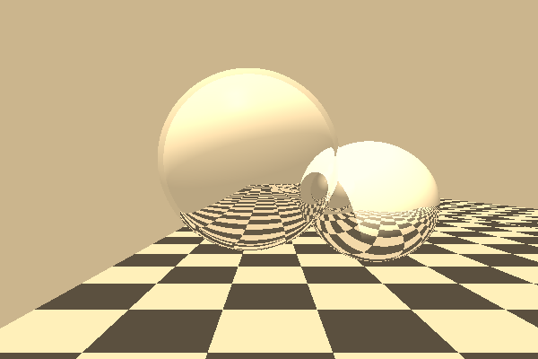
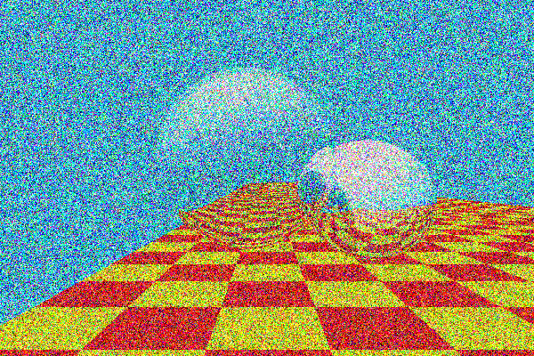
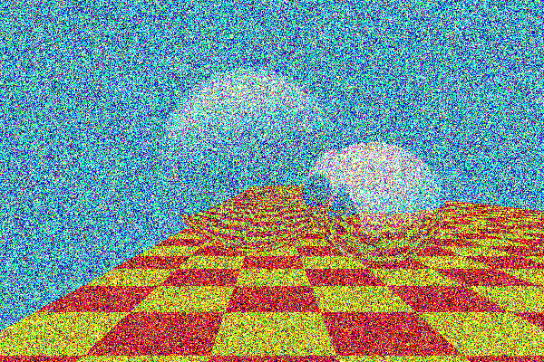

This project aimed to design a flexible and customizable color modification enhancement on top of the raytracer we developed for class. This enhancement allows users to apply a range of different aesthetic effects to images, including hue, saturation, brightnesa adjustments, color balancing, grayscale conversion, sepia tone filtering, and noise effects. The goal was to give users fine-grained control over the visual tone and mood of their images through intuitive, parameter based transformations, while also ensuring that the implementation was efficient and easy to integrate into the existing raytracer framework.
I chose to design this enhancement as a modular function, where each color effect is encapsulated in its own if statement that checks the camera attribues dictionary for the presence of a specific key. This allows for easy addition of new effects in the future, as well as the ability to combine multiple effects in a single rendering pass. The implementation leverages the existing raytracer framework, ensuring that the color modifications are applied after the raytracing calculations have been completed, allowing for maximum flexibility and control over the final image output. Each color modification stage is functionally independent, meaning that they can be applied in any order or combination without affecting the underlying raytracing calculations. This modular approach not only simplifies the implementation but also enhances the maintainability of the codebase, making it easier to debug and extend in the future.
The core of this enhancement is the color modification function, which takes in a color and applies the specified effects based on the camera attributes. The function first checks for the presence of specific keys in the camera attributes dictionary, such as "hue", "saturation", "brightness", "color_balance", "grayscale", "sepia", and "noise". Depending on which keys are present, the function applies the corresponding transformations to the color. For example, if the "hue" key is present, the function adjusts the hue of the color by a specified amount. Similarly, if the "saturation" key is present, it adjusts the saturation level of the color. The function also includes checks for grayscale and sepia effects, applying these transformations as needed. Finally, if a noise effect is specified, it adds a random noise component to the color to create a more textured appearance.
1. Hue, Saturation, Brightness Adjustments (HSV-based):
If the appropriate keys (hue_adjust, saturation_adjust, brightness_adjust) are present, the system first converts the RGB values to HSV. Adjustments are applied directly in the HSV color space for better results, then converted back to RGB. Clipping ensures that the final values stay in the displayable range (0-255)
2. Color Balance (CMY-based):
The system can perform color balancing in the CMY color space. It does this by inverting the RGB components to get CMY, applying the specified adjustments, and then converting back to RGB. This approach enables nuanced control over tones like cyan, magenta, and yellow, common in photography and printing.
3. Grayscale Blending:
Rather than just converting to grayscale, the system blends the original color with a grayscale version of itself. This allows for more subtle effects and can be controlled by a blending factor. The grayscale conversion is done using the luminosity method, which takes into account human perception of brightness. It uses a luminance-based formula to compute grayscale intensity and linearily interpolates between the two. This allows users to desaturate images subtly rather than going fully monochrome.
4. Sepia Filter:
The sepia effect applies a classic brownish tone to images. The system uses values from the sepia matrix transformation to apply the sepia effect, which is a common technique in image processing. The sepia matrix is applied to the RGB values, and the result is clamped to ensure valid color values. Like the grayscale blending, this effect can be controlled by a blending factor, allowing for more subtle applications of the sepia tone. Users can apply it partially for warmth, or fully for a nostalgic aesthetic.
5. Noise Effect:
To simulate film grain or add a visual texture, a uniform random noise generator is used to add a noise effect to each color channel. The user specifies the maximum percentage of noise relative to the full 0-255 color scale, which makes the effect highly customizable. The user can choose to have a light noise effect, or make the image totally unrecognizable. The noise is generated using a uniform distribution, ensuring that the noise is evenly distributed across the color spectrum. This effect can be particularly useful for creating a vintage or artistic look, and can be combined with other effects for even more complex transformations.
6. Final Output:
After all effects are applied, the final RGB values are clipped to the 0-255 range to ensure valid color output. The final values are then sent back to the camera, to generate the final image from the raytracer. The modular design allows for easy addition of new effects in the future, as well as the ability to combine multiple effects in a single rendering pass. The implementation leverages the existing raytracer framework, ensuring that the color modifications are applied after the raytracing calculations have been completed, allowing for maximum flexibility and control over the final image output.

Original Image
Hue - 0.2
Hue - 0.8
Hue - 1.0
Sat - 1.2
Sat - 1.8
Sat - 2.0

Brightness - 1.2
Brightness - 1.8

Brightness - 2.0
HSB - H: 0.2, S: 1.2, B: 1.2
Cyan - 1.2
Cyan - 1.8
Cyan - 2.0

Magenta - 1.2
Magenta - 1.8
Magenta - 2.0
Yellow - 1.2
Yellow - 1.8
Yellow - 2.0
CMY Adjustments - C: 2.0, M: 2.0, Y: 2.0
Sepia - 0.2
Sepia - 0.8
Sepia - 1.0
Grayscale - 0.2
Grayscale - 0.8
Grayscale - 1.0
Noise - 0.2
Noise - 0.8
Noise - 1.0
In the future, I would like to explore the possibility of adding more advanced effects, such as bloom, lens flare, and depth of field. These effects would require more complex calculations and potentially additional data structures to store intermediate results, but they could significantly enhance the visual quality of the rendered images. Another enhancement would be the development of a user interface that allows real-time adjustment of these effects, providing immediate visual feedback and making the system more accessible to non-technical users. Finally, I would like to investigate the use of machine learning techniques for automatic color grading and enhancement, which could provide even more powerful and flexible tools for artists and designers.